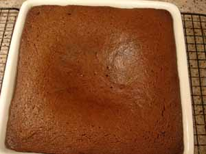

Mom makes gingerbread
I can’t decide if gingerbread is hopelessly old-fashioned or an acquired taste. When I was little my mother made it often, and I think my brother and sister loved it as much as I did. The smell of gingerbread baking and filling the house with the rich aroma of molasses mingled with spices makes me salivate in a way that no other food preparation does. And I don’t think anything else tastes better with a glass of cold milk.
But nowadays, when folks see a pan of something baked and brown, they think it’s going to be brownies or chocolate cake, and faces tend to fall when they find out it’s gingerbread. I generally don’t like to disappoint people when I bake something, so I don’t make gingerbread too often any more. Tonight was one of those nights. I use a recipe from the 1965 edition of The Fannie Farmer Cookbook, called Sour Cream Gingerbread, to which I add some additional spices. The directions call for mixing in a stick of melted butter at the very end, but she says “For a simpler gingerbread, omit the butter.” That sentence has confused me for over thirty years; um, what? Why would I want to omit the butter? And how would that really simplify the gingerbread, anyway?

My big mistake tonight was continually checking for doneness every two minutes, for the last ten minutes or so, with a toothpick, and then not trusting my judgment and underbaking the darn thing anyway. I’m still getting used to my new oven, which runs a little cooler than the old one. So that is why there’s a deep depression in the middle, as pictured at right. It was gooey there, too. But everywhere except right in the center it was delicious.
Sour Cream Gingerbread
Butter a shallow pan 8 or 9 inches square. Set the oven at 350º.
Beat 2 eggs
Add- 1/2 cup sour cream
- 1/2 cup molasses
- 1/2 cup brown sugar
- 1 1/2 cups pastry or cake flour (I just use all-purpose)
- 1 teaspoon baking soda
- 1 teaspoon ginger
- 1/2 teaspoon cinnamon
- 1/4 teaspoon ground cloves
- 1/4 teaspoon ground nutmeg
- 1/4 teaspoon salt
Stir into the first mixture. Add 1/2 cup melted butter.
Beat well and pour into pan. Bake about 30-35 minutes or until toothpick inserted into center is dry.
Note to self – Next time trust your own judgment on a recipe that you have been making for literally over thirty years; if it doesn’t look done leave it in the oven!
Comments
I’m disappointed when something baked and brown is not gingerbread. It’s one of my all-time favorite treats! With a glass of freezing cold milk. Mmm, makes my heart race just thinking of it.
Maybe you’ll put your marble brownies on here one of these days…
I’m so glad you posted this. I made gingerbread about 10 days ago, using the recipe on the molasses bottle, and was very disappointed. There was nothing wrong with it. It just wasn’t FABULOUS. I’m going to try this version and hopefully resuscitate my fondnesss for this classic.
btw, Leland, I’m reading “Comfort Me with Apples” and LOVING it! What talent to combine such a palate with her descriptive skills.
It’s February 5, and I just read your gingerbread recipe. I’m going home and make it right now. I am hungry for that warm satisfying taste.
Add a comment